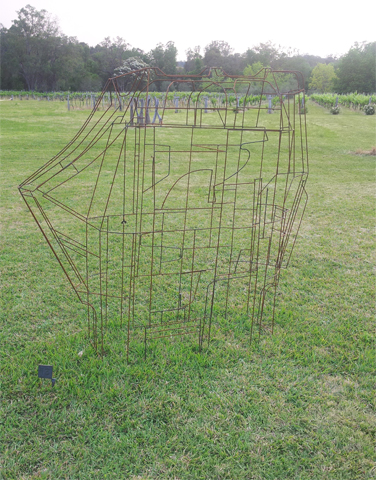
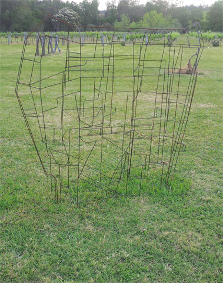
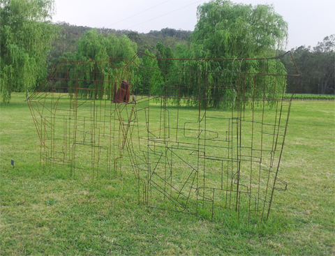

Sculpture in the Vineyards

Title: Withdrawn Space #1
Medium: 6mm round bar & reclaimed steel
Size: 206x225x59
Year: 2013

Sculpture in the Vineyards

Title: Withdrawn Space #2
Medium: 6mm round bar & reclaimed steel
Size: 203x221x59
Year: 2013

Sculpture in the Vineyards

Title: Installation view
Medium: 6mm round bar & reclaimed steel
Size: Dimensions variable
Year: 2013